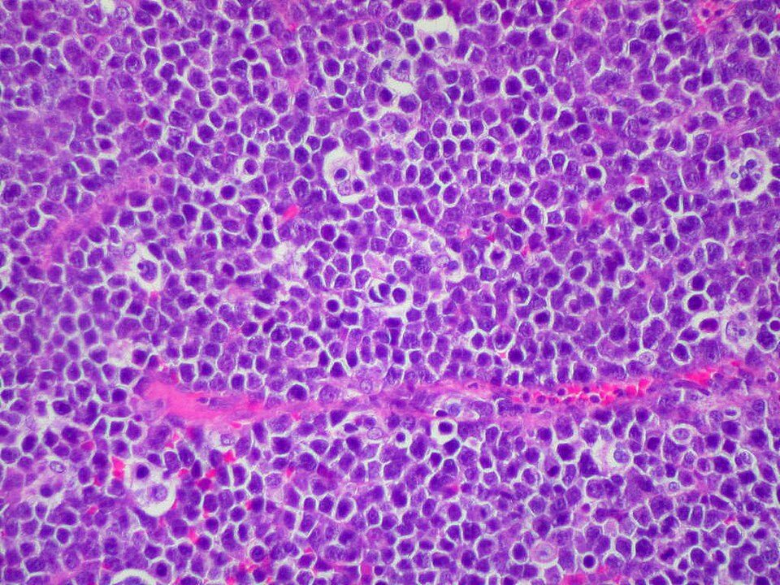

Información divulgativa. No sustituye la valoración de tu equipo médico ni sirve para decidir un tratamiento.


En resumen
| Alteración | Translocación de MYC (t(8;14)) |
| Formas | Endémica (África, ligada al Epstein-Barr y la malaria), esporádica (abdomen), asociada a inmunodeficiencia (VIH) |
| Urgencia | Riesgo de síndrome de lisis tumoral al empezar el tratamiento |
| Tratamiento | Quimioterapia intensiva corta con rituximab |
| Curación | > 90 % en niños; ~80 % en adultos |
Historia
El cirujano Denis Burkitt describió en 1958 tumores de mandíbula en niños de Uganda. En 1964, Anthony Epstein e Yvonne Barr encontraron en esas células el primer virus causante de cáncer humano, el virus de Epstein-Barr.
Tratamiento
Hospitalización con hidratación intensa y fármacos (rasburicasa) para prevenir la lisis tumoral; quimioterapia intensiva de corta duración (CODOX-M/IVAC, DA-EPOCH-R o protocolos pediátricos como LMB), con rituximab y profilaxis del sistema nervioso central. En África, la falta de acceso a estos tratamientos sigue costando muchas vidas.
Ver también: Linfomas, Cáncer infantil, Cáncer de nasofaringe.
Historia · Medicapedia
Linfoma de Burkitt en la historia de la medicina
Cómo se descubrió, quién lo investigó y cómo cambió su tratamiento a lo largo de los siglos, contado en Medicapedia, nuestra web hermana de historia de la medicina.
Leer la historia en Medicapedia ↗Fuentes
- Ribrag V, et al. Rituximab and dose-dense chemotherapy for adults with Burkitt's lymphoma. Lancet. 2016;387:2402-2411.01317-3)
- Epstein MA, Achong BG, Barr YM. Virus particles in cultured lymphoblasts from Burkitt's lymphoma. Lancet. 1964;1:702-703. doi:10.1016/S0140-6736(64)91524-7